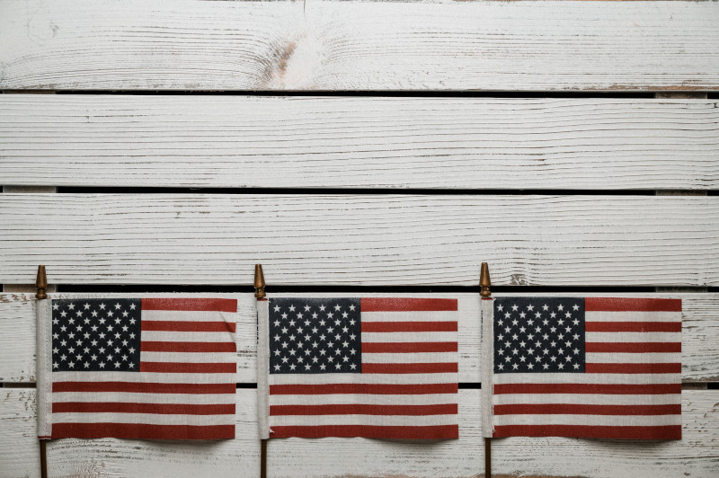

Aliados VS Eixo
"A Segunda Guerra Mundial estendeu-se de 1939 até 1945, resultando na morte de 60 milhões a 70 milhões de pessoas, embora existam estatísticas que sugiram que a guerra provocou mais que 70 milhões de mortos. O conflito teve como estopim a invasão da Polônia pelos alemães em 1º de setembro de 1939.
A guerra iniciou-se na Europa, mas espalhou-se pela África, Ásia e Oceania e contou com o envolvimento de nações de todos os continentes, inclusive o Brasil. Pode ser organizada em três fases distintas: a fase da supremacia alemã, a fase em que as forças estavam equilibradas e a fase que marcou a derrota do Eixo.
Os grupos que se enfrentaram na guerra foram os Aliados (Reino Unido, França, União Soviética e Estados Unidos) e o Eixo (Alemanha, Itália e Japão). Esse conflito ficou marcado por uma série de acontecimentos impactantes, tais como o Massacre de Katyn, o Holocausto, o Massacre de Babi Yar e o lançamento das bombas atômicas sobre Hiroshima e Nagasaki.
A Segunda Guerra teve fim oficialmente em 2 de setembro de 1945, quando os japoneses assinaram um documento que reconhecia sua rendição incondicional aos americanos (os nazistas renderam-se aos Aliados em maio de 1945)."
